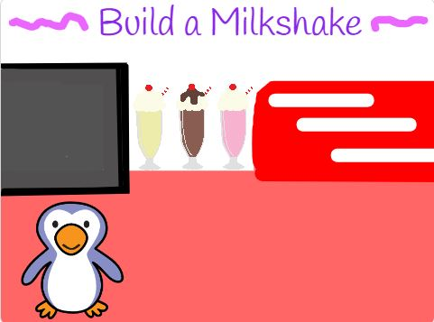

My Portfolio
--Build A Milkshake--

This was another project I completed within the first year of being introduced to computer science. It is again based on the Scratch block programming language. This is basically a game in which the player builds their own milkshake according to the options given. The penguin character asks the player the questions to which the player will type in their answer. Based on what the player wants, the milkshake will be modified based on that until the player is given the final product and their receipt.